Lossless smoothing of intermittent PV power
The main objective is to meet the given ramping limits of PV power while accumulating the minimum intermittent energy by its lossless smoothing. If the smooth PV power is generated by a low-pass filter (LPF) excited by the output power of PV panels, then such a power filter induces high accumulation costs due to its time lag (group delay in its frequency response). The higher LPF order or its lower cut-off frequency, the smoother output but the greater group delay. The time lag could be eliminated in theory, if the LPF was excited by a future PV power signal. Unfortunately, the the time course of PV power is random and its short-time prediction (nowcasting) is not exact and its error considerably increases the accumulated energy by LPF. Recently, various predictive filters e.g. zero group-delay filter , Kalman filter have been developed to avoid the accumulation of PV energy due to the time lag of LPF. Advantage of predictive filters is that they integrate the predictor and LPF into a same functional entity, potentially accumulating less energy than a standard LPF excited by a predicted PV power does. But the self-predicted filters are trained only by information carried by the measured power signal p(t), lacking the information from sky imagery. As a result, the accumulation cost induced by predictive filters still exceeds the production costs of fossil and nuclear electricity (assuming current social cost of CO2 and nuclear waste). Our analysis will be therefore focused on the application of standard LPF excited by PV predictor trained by both sky imagery and p(t) signals. We further integrate the two into one entity, utilizing the theoretical advantage of predictive filters.
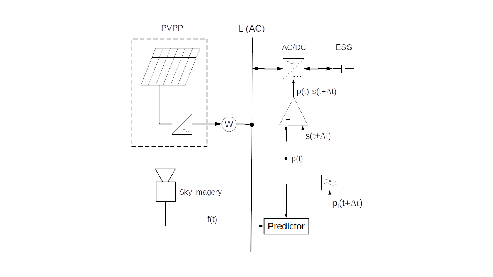
In the schematic diagram on Figure 1, a PV power plant (PVPP) is connected to the grid and its intermittent power p(t) is accumulated or compensated (i.e. smoothed) by an accumulator (ESS). The smoothing power is actuated by a bidirectional inverter AC/DC. The smoothing power is determined by the ouput signal p(t)-s(t+Δt) of a differencer. Positive sign of the smoothing power is oriented from the grid to ESS. Hence the total power superimposed to the grid by PVPP and ESS is determined by the filter’s output signal s(t+Δt). For the simplification, PVPP and ESS are single-phase-connected to the grid. 4 different smoothing methods will be further analysed:
-
In case of LPF smoothing, the measured signal p(t) bypasses the predictor, directly exciting LPF.
-
In theory, an ideal predictive smoothing IPLPF excites LPF by the exact future PV power signal p(t+Δt) where the time advance Δt is absolutely equal to the LPF's group delay at frequencies f<<fc where fc is the cut-off frequency of LPF. The smooth power signal s(t+Δt) is the response of LPF to the input signal p(t+Δt).
-
According to the schematic diagram, a PLPF smoothing method excites the LPF with a predicted PV power signal pf(t+Δt), approximating the signal p(t+Δt). The predictor is trained by the sky-imagery signal and by the measured PV power p(t).
-
Eventually, a smart smoothing method SPLPF (patent pending) has been designed, integrating the LPF with the PV predictor trained by both the sky-imagery and the measured PV power p(t). This method has a different block diagram.
Accumulation of energy by smoothing
For simplicity of analysis, energy losses in AC/DC conversion and accumulation will be neglected.
Time course of the accumulated energy by ESS
$$SOC(t)=\int_{0}^t (p(\tau)-s(\tau+\Delta t))d\tau\tag{1}\label{eq:1}$$
defines the change in the state-of-charge [Wh] since time=0 until time=t, while SOC may acquire both positive and negative values. (Always-positive SOC values in ESS can be technically managed.) The time advance Δt reduces absolute values of the integrated function. The IPLPF-defined signal s(τ+Δt) ensures that following 4 technical criteria are satisfied:
Mean value of SOC is near to zero:
$${1 \over T} \int_{0}^T SOC (t) dt ≈ 0\tag{2}\label{eq:2}$$
Mean quadratic deviation of SOC is near to minimum:
$${1 \over T} \int_{0}^T SOC^2 (t) dt ≈ min\tag{3}\label{eq:3}$$
Hence the required storage capacity per cycle T (24 hours in case of PV power p(t)) is close to minimum:
$$\Delta SOC = max(SOC) – min(SOC) ≈ min\tag{4}\label{eq:4}$$
At the begining of each cycle, the value min(SOC) should be predicted and ESS must be accordingly pre-charged to -min(SOC) in order to keep SOC≥0 during the whole cycle.
Eventually, near-to-minimum throughput of accumulated energy per cycle is achieved by IPLPF:
$${1 \over 2} \int_{0}^T|p(\tau)-s(\tau+\Delta t)|d \tau ≈ min\tag{5}\label{eq:5}$$
The accumulation rate is expressed by \eqref{eq:4} and \eqref{eq:5}, and by the demanded power from/to ESS during a sudden loss or a peak of direct sunlight:
$$P_{ESS}=max|p(\tau)-s(\tau+\Delta t)|\tag{6}\label{eq:6}$$
In practise, its maximum value does not exceed 80% of the installed PV power.
Let us expect that the PV power p(t) is proportional to the global solar irradiance GI [W/m2]. In our experiment, the solar irradiance is intercepted by a planar panel 20 cm x 16 cm on the earth’s surface at latitude=48.2°N, longitude=17.1°E, with the plane of incidence elevated by 47°, south-oriented. To be exact, it should be mentioned that p(t) is usually smoother than GI(t), as the (usually greater) surface area of the corresponding PV plane acts like a moving-average filter of GI(t). Unfortunately, the size and speed of clouds prevent a sufficient smoothing effect from being achieved by the PV surface area. Assuming the proportionality between GI(t) and p(t), we analyze the worst case of PV intermittency. Let us now substitute the signals p(τ), s(τ+Δt) in \eqref{eq:1}, \eqref{eq:5}, \eqref{eq:6} by the measured signal GI(τ) and by its “predicted-and-smoothed” counterpart GIs(τ+Δt). After substituting, the intergal \eqref{eq:1} computes the time course of specific accumulated energy GX(t) [Wh/m2] by the filter, whereas SOC(t) is proportional to GX(t). The integral \eqref{eq:5} computes the specific accumulated throughput [Wh/m2] per cycle T.
Ideal predictive smoothing (IPLPF)
We simulate the operation of ideal predictive PV smoothing (IPLPF) by means of a LPF, ex-post excited by a future signal GI(t+Δt) where GI(t) is measured and the time advance Δt (above defined) eliminates the filter’s time lag. In theory, such an ideal smoothing would minimize the accumulated energy for the given ramping limit. This analysis aims to reveal the potential affordability of PV smoothing, assuming that a real smoothing technology exists, performing close to IPLPF. The numeric experiment is based on the measured solar irradiance over a period of 1 year, and the contemporary prices of LiFePO4 accumulators.
Accumulation rate
The measured signal GI(t) and applied LPF allow for the aggregation of specific ESS parameters requested by the IPLPF smoothing:
- maximum specific power GIESS=max|GI(τ)-GIs(τ+Δt)| by \eqref{eq:6},
- maximum specific energy capacity ΔGX=max(GX)-min(GX) by \eqref{eq:4},
- specific IPLPF-accumulated throughput by \eqref{eq:5}.
These 3 values define the accumulation rate. Using a reference LPF, the accumulation rate of IPLPF smoothing quantifies the solar intermittency.
Smoothing by IPLPF vs LPF
Global irradiance GI measured, filtered by LPF and by IPLPF, and the specific energy GX accumulated by filters:
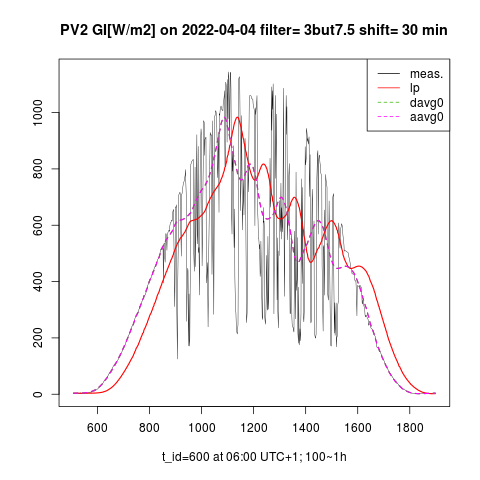
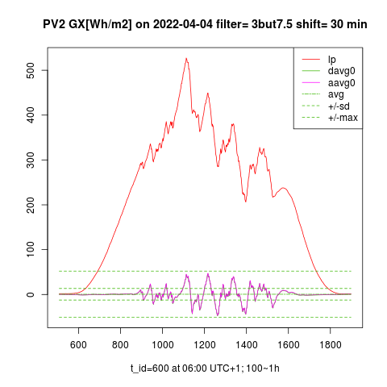
The left graph shows the measured and low-passed (legend “lp”) GI signals on a day with high solar exposure and strong intermittency. The graph on the right shows the specific accumulated energy GX [Wh/m2] by IPLPF (legend "aavg0") vs LPF (legend "lp") on the given day. Exactly-predicted input signal GI(t+Δt) shifts the IPLPF output to the left, minimizing the standard deviation of GX, thus in practise minimizing the difference ΔGX = max(GX) – min(GX) which is the specific accumulation capacity. The specific throughput of accumulated energy is also minimized by IPLPF.
Costs of IPLPF smoothing
Smoothing costs result from the accumulation technology and from the accumulation rate. The accumulation rate results from the solar intermittency and from the desired ramping of smoothed PV power. In a non-ideal smoothing (e.g. PLPF), the values \eqref{eq:4} and \eqref{eq:5} are larger the less perfectly controlled the balancing of power between the grid and ESS. In the illustrated example, IPLPF needs only 18%-20% ΔSOC relative to LPF, and IPLPF accumulates between 57%-70% of the energy throughput relative to LPF (see Tables 2, 3). There is a trade-off between the smoothing quality and the accumulation rate: The lower ramping limit (i.e. smoother s(t)), the higher accumulation rate. (This trend is especially critical in PLPF smoothing: The higher Δt, the higher prediction error, and the much higher accumulation rate!) Both ΔSOC and energy throughput reach their theoretical minimum with IPLPF smoothing. Based on the measured GI(t) over a time span of 1 year and the LiFePO4 lifecycle data and prices, the accumulation rate of IPLPF has been aggregated and the corresponding smoothing costs have been calculated. The results show that IPLPF operation is worthwhile with the German power purchase tariff and PV feed-in tariff as of 2021. The ideal smoothing costs are substantially lower than the difference between the electricity purchase and PV feed-in tariffs (assuming that the smooth PV infeed partially eliminates the distribution costs).
Small-scale hybrid PV system
A household with installed PV power <10kW is connected to the low-voltage grid, having a LiFePO4 BESS with energy capacity ≈ 2h x installed PV power. The hybrid PV system feeds its excessive PV power to the grid, as long as the household’s consumption is satisfied and the battery has been charged. If the charging stopped at e.g. 85% SOCmax, the BESS would provide enough power to smooth the excessive PV infeed to the grid with relative power <1C, provided that the remaining free BESS capacity has been reserved for IPLPF smoothing (e.g. 7% ΔSOC had to be reserved for IPLPF on 2022-03-04). Additional technical measures have to avoid its microcycling - e.g. the BESS consists from 2 independent batteries.
IPLPF costs measured from 04/2021 to 03/2022. The plane of incidence and the applied LPF correspond to the GI(t) and GX(t) plots:
Conditions of cost calculation:
1/3 of the yearly-generated PV energy by the hybrid PV system is assumed as infeed to the grid.
Microcycling of Li-Ion BESS is eliminated by technical measures.
LiFePO4 life cycle data and per kWh price as of 2021
Energy losses due to AC/DC conversion and accumulation are neglected.
The costs are specific per 1 kW of installed PV power.
CapEx = initial investment to PV smoothing includes 90% of the BESS capacity reserved for the basic storage, 10% for smoothing.
OpEx = regular (e.g. yearly) costs necessary for its uninterrupted operation.
The greater from (CapEx, sevice_interval * OpEx) defines the cost of IPLPF smoothing for a given service interval.
Having a small free BESS capacity and a total BESS power available, the smoothing by IPLPF is much cheaper than the added value to the PV power infeed is. IPLPF technology offers an affordable smoothing of PV power in grid areas with a high concentration of small-scale hybrid PV systems.
Suitable accumulators for IPLPF
Although the IPLPF shrinks the necessary capacity and accumulated throughput to their theoretical minimum, it reciprocally increases the relative smoothing power GIESS/ΔGX up to 8 h-1. Regardless of its reduced capacity, ESS must supply the missing PV power while the direct sun beams are temporarily shadowed by clouds. Lithium accumulators are cheap, efficient and fast, but not enough powerful for a sole IPLPF smoothing. It is not recommended to charge/draw a LiFePO4 battery by a relative power > 1 h-1, otherwise the battery’s life cycle would be curtailed. Such a high relative power is provided by EDLC supercapacitors (SC), but on contrary to Lithium bateries, these do not provide enough cheap capacity to make the IPLPF smoothing affordable. The currently-available RedOx and EDLC technologies do not harmonize with the sole IPLPF smoothing demands.
Actually, the IPLPF demands are well satisfied by a
flywheel (FESS)
: 1) Its maximum relative power 10 h-1 poses no limit within demands of IPLPF smoothing. 2) IPLPF accumulates energy only on solar-intermittent days (else no accumulation is needed), and the flywheels wear out only when rotating. 3) Flywheels are already used to compensate for reactive power in the grid, which places similar technical requirements on them like the IPLPF smoothing of PV power does. (Because of unknown prices and life cycle data, we calculated neither CapExp, nor OpExp of FESS in a role of IPLPF storage.) The native synergy between demands and features identifies the flywheel as a suitable accumulator for IPLPF smoothing.
Summary of IPLPF
One year of continous GI(t) measurement has confirmed that if the PV smoothing performed close to the ideal smoothing IPLPF, it would be affordable with LiFePO4 technology when properly implemented in a hybrid PV system (inclusive measures against micro-cycling of BESS). Existing flywheel technology is probably most suitable for the IPLPF smoothing of PV power. Low accumulation rate achieved by IPLPF should motivate the further development of technologies among which the high-power accumulation of energy, accurate nowcasting of PV power, and the smart filtering of intermitent power are key.
Real smoothing of PV power
Now, the objective is to analyze the smoothing quality vs accumulation rate (in summary: performance) of PV smoothing under real conditions. The measured global irradiance signal GI(t) allows not only the simulation of ideal predictive low-pass smoothing (IPLPF), but also a predictive smoothing of PV power (PLPF) having the low-pass filter excited by a real-predicted signal GIf(t+Δt). The values GIf are biased by a prediction error. The numeric results will show that this error induces a significant energy accumulated by the PLPF smoothing. We simulated the prediction error into the measured GI values in order to statistically represent the predicted signal GIf(t+Δt) and to have a possibility to adjust the prediction error. Thus, the measured GI(t) signal allowed us to analyze the impact of prediction error on the smoothing of PV power.
In addition to PLPF, we have developed a “smart predictive" low-pass smoothing method SPLPF (patent pending), minimizing the accumulated energy with respect to the real-predicted values GIf. Eventually, we analyzed the performance of the following smoothing methods:
- LPF: Input of LPF excited by the measured signal GI(t)
- IPLPF: Input of LPF excited by the measured, optimally left-shifted signal GI(t+Δt)
- PLPF: Input of LPF excited by the simulated-predicted signal GIf(t+Δt)
- SPLPF: Smart power filter excited by the simulated-predicted signal GIf.
OLAP analysis
The goal is to analyze the accumulation rate by partial dimensions (several independent quantitative or categorical variables), assuming a given smoothing quality i.e. ramping of the filtered power. The reference smoothing quality is defined by a 3rd-order Butterworth filter with cut-off frequency = 7.5/12h, operated by IPLPF method with Δt = 30 minutes. We aggregate the accumulation rate into an OLAP cube having the following dimensions:
- smoothing method
- LPF order
- smooth_int (prediction error)
- SE (prediction error)
First of all, the same smoothing quality has been fixed to various LPF used: Low-pass filters of orders 1 to 4 have been tuned to provide equal output ramping, provided that each filter is excited by the measured, optimally shifted signal GI(t+Δt). With such a tuning, increasing of the LPF order increases its cut-off frequency but only slightly increases the advance Δt. The next goal was to identify the LPF order accumulating minimum energy, given the smoothing method and ramping limit. It was found out that the optimal LPF order for SPLPF is also valid for the IPLPF smoothing method. (This is irrelevant for the remaining 2 methods since they accumulate much more energy than IPLPF and SPLPF.) Once having the optimum LPF order, the performance of smoothing methods PLPF, SPLPF was analyzed by varrying the prediction eror.
The numerical results are interpreted by tables, plots, and these are literally expressed.
Simulation of predicted PV power
The group delay of LPF is a physical function of the LPF order and its cut-off frequency. But given the ramping limit, it changes only slightly for any valid combination of the two variables. Hence Δt technically represents the smoothing quality of LPF, or the ramping of output power. Impact of the prediction error on GIf is aggregated at the "future" time t+Δt. The predicted signal GIf(t+Δt) is derived from the measured, left-shifted signal GI(t+Δt) by smoothing its "future" time course and by superimposing a random error to it, with respect to the fundamental properties of PV predictors:
- as the advance Δt increases, the (unwanted) smoothing of the predicted signal GIf strengthens
- as the advance Δt increases, the impact of random error on GIf increases (statistically cumulates)
We specify the prediction error by 2 OLAP dimensions:
- Interval of prediction, after passing of which the smoothing impact on the predicted signal is strengthened, is defined by the parameter smooth_int [minute]. The shorter this interval, the steeper the smoothing effect rises towards predicted future.
- Standard deviation of the random prediction error SE (a dimensionless parameter). A random value is superimposed to each future GI value. This error is re-generated after passing each 6-minute interval of prediction. The impact of random error on GIf(t+Δt) is statistically cumulated over interval Δt (Δt is obviously greater than 6 minutes).
In this report, we simulate the GIf predictors with two different accuracies:
- “Better prediction accuracy”: smooth_int = 6 minutes, SE = 0.05
- "Worse prediction accuracy": smooth_int = 3 minutets, SE = 0.1.
Impact of prediction error
The smoothing exhibits following dependencies on the partial dimensions expressing the prediction error (see Figures 2, 6):
Smoothed predicted signal
- Changing of smooth_int affects the power smoothing quality neither of SPLPF nor of PLPF method, while for all values, the PLPF method performs smoother than the SPLPF method (Figures 3, 4, 7, 8).
- Lowering of smooth_int dramatically increases the accumulation rate of PLPF, which is always much greater than the accumulation rate of SPLPF (Figures 5, 9). With "worse prediction accuracy", the PLPF method even exceeds the accumulation rate induced by the LPF method (Figure 9). In the SPLPF method, the accumulation rate increases only slightly and much more slowly than in PLPF.
Random error in predicted values
- Increasing of SE has no impact on the smoothing quality of the PLPF method, but it does degrade the quality of SPLPF (check Figure 7 vs Figure 8). In PLPF, the smoothing quality with standard error SE > 0 is always better than in SPLPF.
- Increasing of SE significantly increases the accumulation rate of PLPF method (Figures 5, 9), which is for all values SE > 0 much higher than the accumulation rate of SPLPF method. For some SE values, the PLPF method even exceeds the LPF method in its accumulation rate. The accumulation rate increases only slightly in the SPLPF method, and less so the higher the filter order (up to 3).
Analysis by LPF order
The filter order is another OLAP dimension, impact of which on the smoothing performance was analyzed along with the prediction error. We analyzed the LPF orders 1 to 4 (Figures 10-21):
- Filter order does not affect the smoothing quality achieved by PLPF method, given non-zero prediction error. For small filter orders, the output of PLPF is smoother than that of SPLPF.
- Increasing the filter order from 1 to 3 notably improves the smoothing quality of SPLPF, given non-zero prediction error (Figures 10-12, 16-18).
- Given the prediction error, increasing of the filter order only slightly reduces the accumulation rate by PLPF which is always substantially greater than the accumulation rate by SPLPF.
- Increasing of the filter order notably reduces the accumulation rate induced by both IPLPF (zero prediction error) and SPLPF (non-zero prediction error) smoothing methods - see Figures 13-15, 19-21. With the simulated predictor, this trend is reversed between orders 3 and 4 by the SPLPF method. With the simulated predictor, SPLPF performs best with the filter order 3.
Numerical results of smoothing
The presented results are based on the measured GI data exhibiting a strong solar intermittency and a moderate to strong global insolation.
Accumulation rate by method
Accumulation rate per date and smoothing method, using the reference filter:
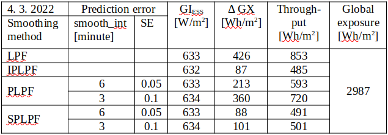
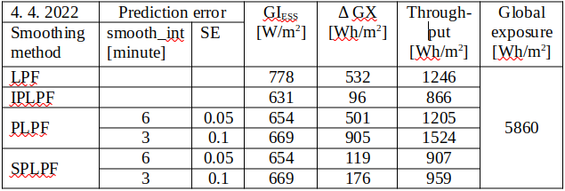
Maximum specific power from/to ESS calculated by \eqref{eq:6} is in the column "GIESS". Difference between the maximum and minimum specific accumulated energy calculated by \eqref{eq:4} is in the column "ΔGX". Daily flow of the specific energy through ESS calculated by \eqref{eq:5} is in the column "Throughput". Global exposure of the plane of incidence is also displayed.
With "better prediction accuracy" during the selected days, SPLPF smoothing required the relative ESS power between 5.5h-1 - 7.2h-1 which is 3.8 - 4.8 times more then with LPF, 2.4 - 4.2 times more than with PLPF, and eventually 84% - 99% of the IPLPF power request. The SPLPF smoothing required 21% - 22% of the ESS energy capacity used by LPF, or 24% - 41% of the capacity used by PLPF. SPLPF eventually required 1.0 - 1.2 times the ESS capacity used by IPLPF. The SPLPF smoothing put 58% - 73% of the energy through ESS relative to the LPF method, or 75% - 83% of the energy throughput by PLPF. SPLPF eventually put 1.0 - 1.1 times more energy through ESS than the IPLPF method.
With "worse prediction accuracy" during the selected days, SPLPF smoothing required the relative ESS power between 3.8h-1 - 6.3h-1 which is 2.6 - 4.2 times more then with LPF, 3.6 - 5.1 times more than with PLPF, and eventually 58% - 86% of the IPLPF power request. The SPLPF smoothing required 24% - 33% of the ESS energy capacity used by LPF, or 19% - 28% of the capacity used by PLPF. SPLPF eventually required 1.2 - 1.8 times the ESS capacity used by IPLPF. The SPLPF smoothing put 59% - 77% of the daily energy through ESS relative to the LPF method, or 63% - 69% of the energy throughput by PLPF. SPLPF eventually put 1.0 - 1.1 times more energy through ESS than the IPLPF method.
SPLPF vs IPLPF
Although we did not analyze the whole year (the numerical simulation of SPLPF is computationally intensive), our analysis of the 4 smoothing methods on the selected days with high solar intermittency and various solar exposure, with 4 filter orders, and with varrying prediction error provides a detailed insight into the SPLPF performance. This smoothing method performs much better than PLPF. With a relatively small prediction error, SPLPF performs close to the ideal smoothing IPLPF. The presented empirical results have been also theoretically proven (part of the patent application).
Graphical display of smoothing
The following graphs show the smoothing quality and accumulated energy according to the smoothing method and the rest OLAP dimensions. The measured data from 2 selected days have been processed and plotted as the following time series:
- Measured GI(t), synchronized with predicted GIf (1 hour zoomed) - Figures 2, 6
- Measured GI(t) and its smooth counterpart by the prediction accuracy, comparing all smoothing methods, having optimal LPF order applied - Figures 3, 4, 7, 8
- Accumulated GX(t) by the prediction accuracy, comparing all smoothing methods, having optimal LPF order applied - Figures 5, 9
- Smoothed GI(t) by the filter order and prediction accuracy, comparing IPLPF and SPLPF smoothing methods - Figures 10-12, 16-18
- Accumulated GX(t) by the filter order and prediction accuracy, comparing IPLPF and SPLPF smoothing methods - Figures 13-15, 19-21
Analysis by prediction error
A day with medium insolation
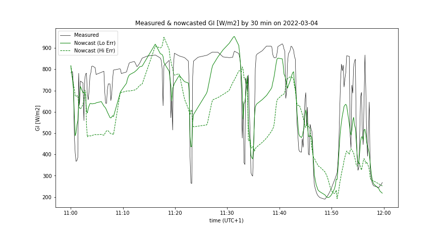
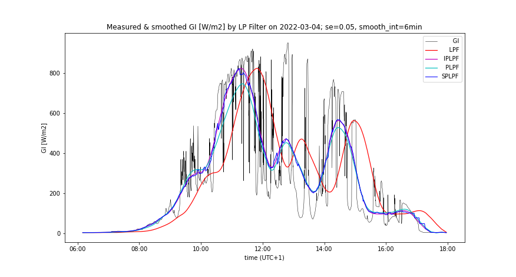

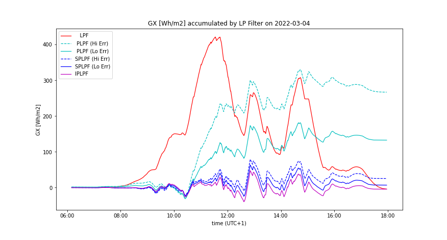
A day with high insolation
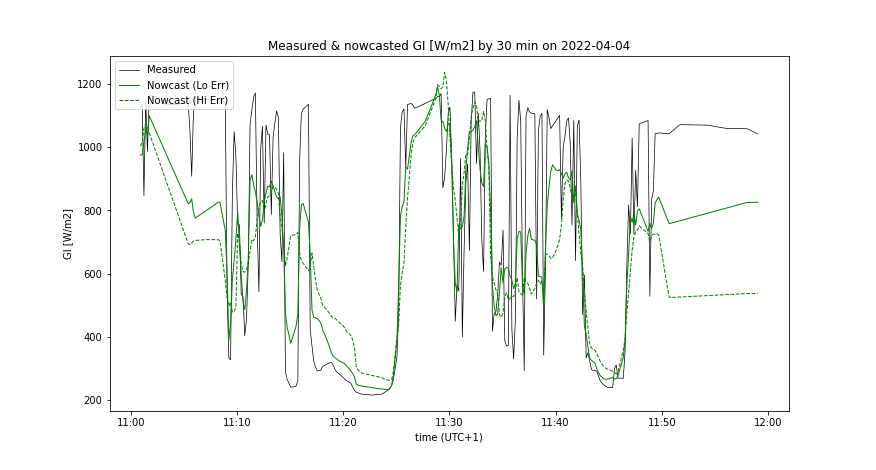
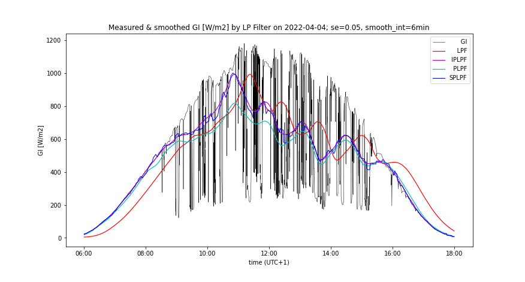
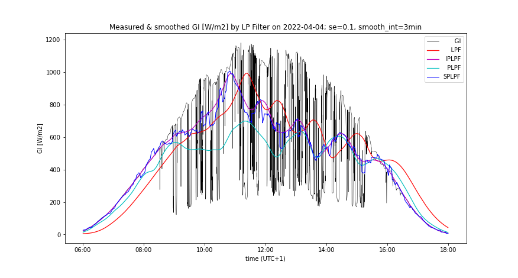
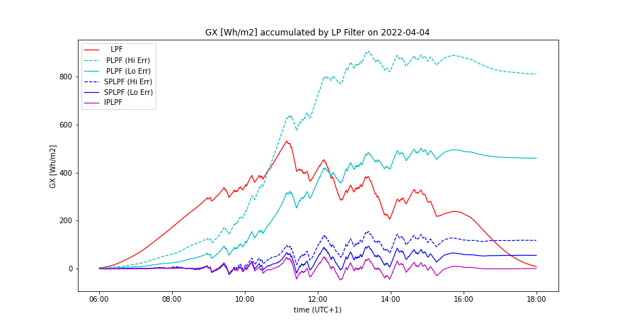
Analysis by LPF order
Following graphs compare the smoothing by IPLPF vs SPLPF method:
A day with medium insolation
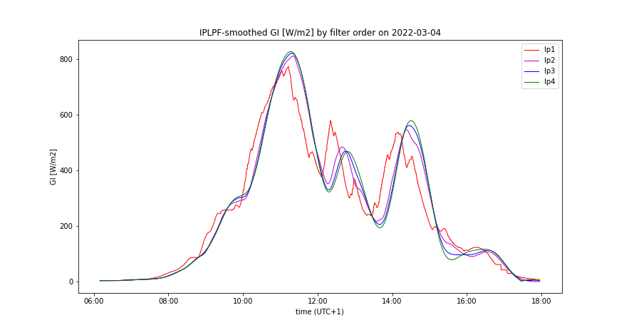
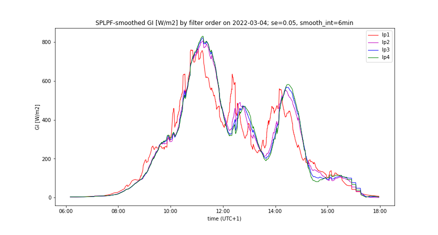
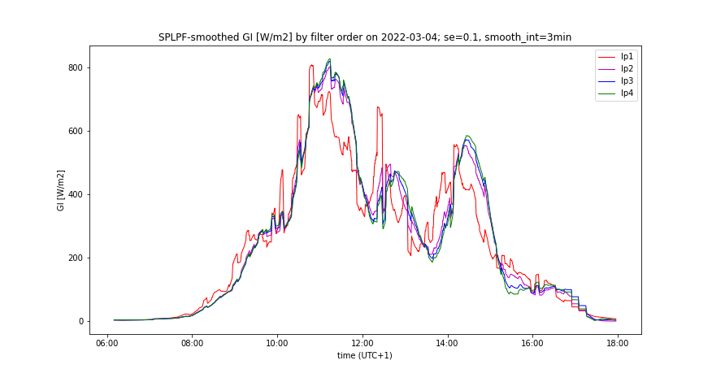
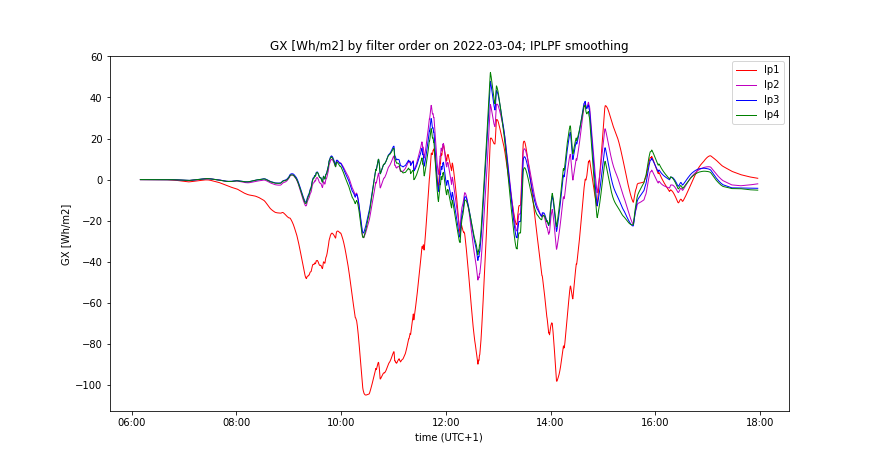
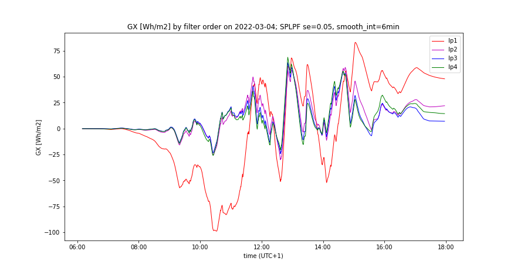
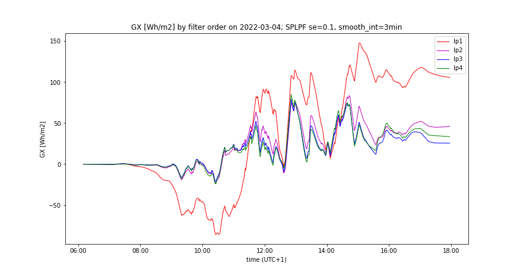
.
A day with high insolation
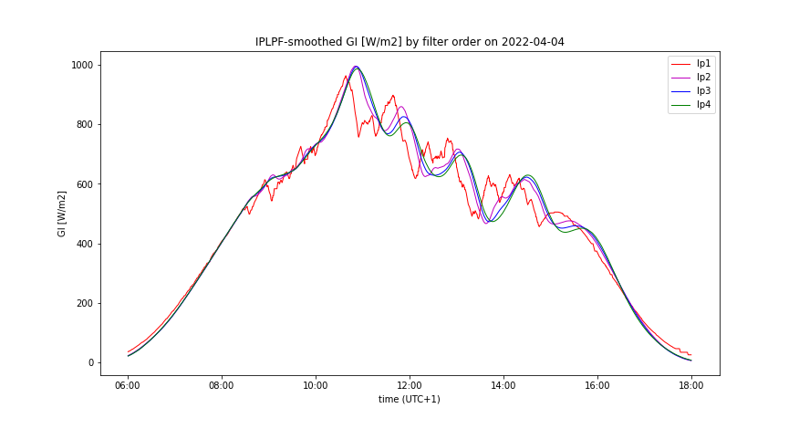
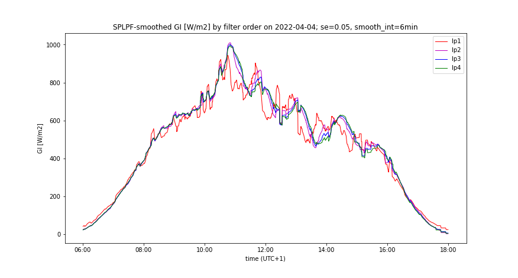
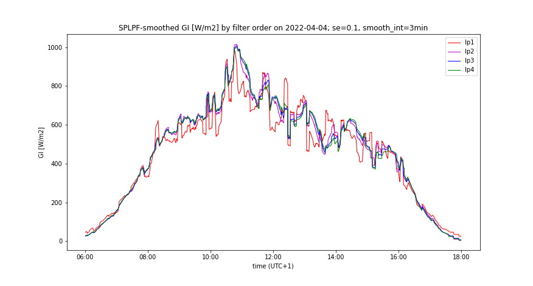
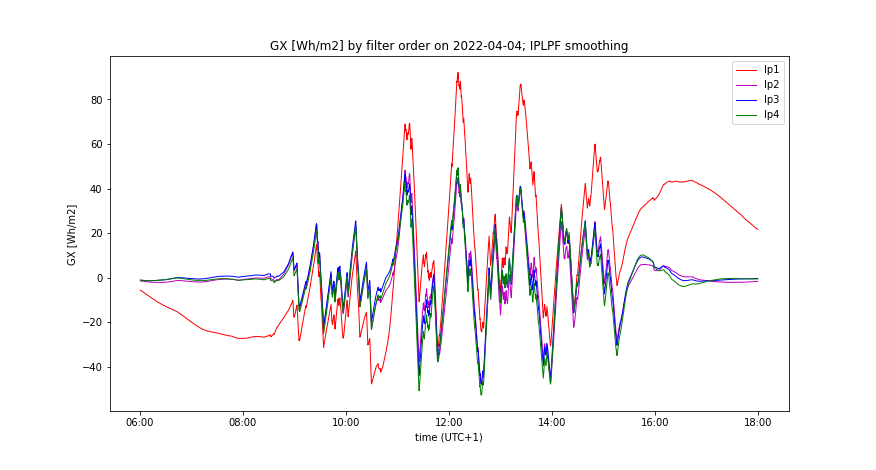
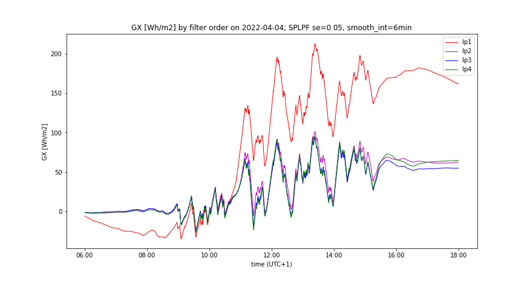
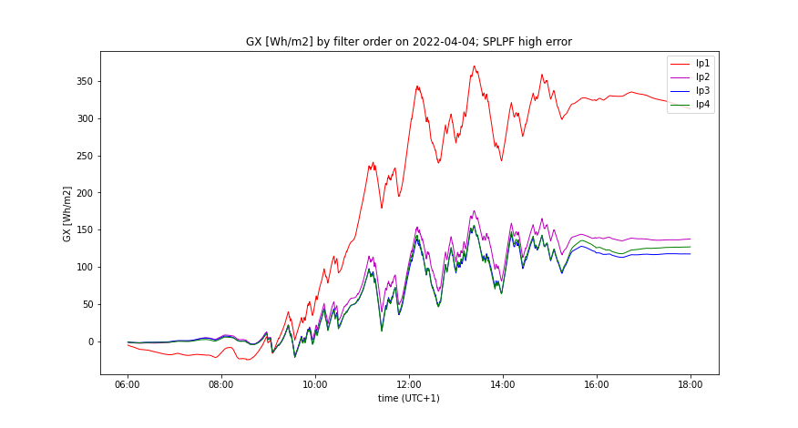